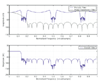

| Filter Design Toolbox Demos |
Design and analyze fixed-point, adaptive, and multirate filters
The Filter Design Toolbox is a collection of tools that provides advanced techniques for designing, simulating, and analyzing digital filters. It extends the capabilities of the Signal Processing Toolbox by adding filter architectures and design methods for complex real-time DSP applications.
The toolbox also provides functions that simplify the design of fixed-point filters and the analysis of quantization effects. The quantized algorithms in the toolbox will match the output of the algorithms on a fixed-point DSP, FPGA, or ASIC exactly because the simulation is bit-true. You can easily iterate your design in the MATLAB environment before hardware implementation.
The toolbox provides an extensive collection of multirate filters. These filters include decimators and interpolators, and fractional sample-rate converters that are frequently used in digital audio applications.
The toolbox also contains a comprehensive suite of adaptive filters and specialized tools to analyze the filter's performance. Adaptive filters are commonly used in areas such as digital communications and noise cancellation.